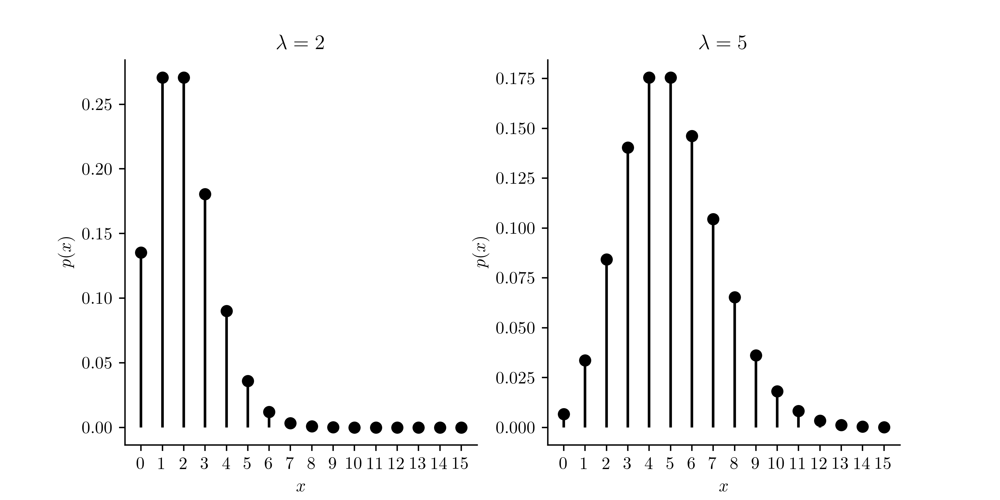

Here we introduce a discrete and a continuous probability distribution which go hand in hand: The Poisson and exponential distributions. The Poisson distribution was conceived as a probability distribution for random variables which are counts, taking the values \(0,1,\dots\) such that there is no known maximum value the count can take. That is, it is a probability distribution for discrete random variables with support \(\mathcal{X}= \{0,1,2,\dots\}\). An example would be the number of washed up jellyfish you find walking the shore for a mile:
Example 14.1 (Jellyfish along the shore) Suppose you walk along the shore counting the number of jellyfish washed up on the sand. Let \(X\) be the number of jellyfish you find along one mile of shoreline.
The exponential distribution is a probability distribution for a continuous random variable having support on the non-negative real numbers \([0,\infty)\). It is often proposed as a distribution for the time elapsed between events. Or, in the jellyfish example, if we define the random variable \(Y\) as the distance we walk between any washed up jellyfish and the next one, we might propose the exponential distribution for \(Y\).
We will consider the Poisson distribution first.
14.1 Poisson distribution
The Poisson distribution arises from the idea of Poisson process. We can think of a Poisson process as an experiment of which the outcome is a set of points positioned over an interval or over a region representing occurrences or instances of some event. Moreover, the occurrences of the events are i) independent of each other and ii) occur randomly but at a constant rate of the entire interval or region. There is a more mathematical definition of a Poisson process, but the description we have given here will suffice for our purposes.
In the jellyfish example, the “occurrences” are the appearances of jellyfish which have washed up on the shore and the “interval” is a given length of shoreline. If the washing up of jellyfish on a shoreline takes place according to a Poisson process, then the number of jellyfish encountered along each stretch of shoreline of a given length will have the Poisson probability distribution. We will define this distribution by giving its probability mass function (PMF).
Definition 14.1 (Poisson distribution) A random variable has the Poisson distribution with rate parameter \(\lambda > 0\) if it has PMF given by \[
p(x) = \frac{\lambda^xe^{-\lambda}}{x!}.
\]
If \(X\) has the Poisson distribution with rate parameter \(\lambda>0\), we will write \[
X \sim \text{Poisson}(\lambda).
\] The rate parameter \(\lambda\) must be a positive number. This rate governs the abundance of “occurrences” of the event in a given interval of time or space. Figure 14.1 shows plots of the \(\text{Poisson}(\lambda)\) PMF for two different values of \(\lambda\). We see that larger values of \(\lambda\) result in the assignment of greater probabilities to greater values in the support \(\mathcal{X}= \{0,1,2,\dots\}\).
Code
import numpy as npimport matplotlib.pyplot as pltimport scipy.stats as statsplt.rcParams['figure.dpi'] =128plt.rcParams['savefig.dpi'] =128plt.rcParams['figure.figsize'] = (4, 2)plt.rcParams['text.usetex'] =Truefig, axs = plt.subplots(1,2,figsize=(8,4))col ='black'lam = [2,5]maxx =15x = np.arange(maxx+1)for i inrange(2): px = stats.poisson.pmf(x,lam[i]) axs[i].vlines(x,np.zeros(maxx+1),px,color=col) axs[i].plot(x,px,'o',color=col) axs[i].spines['top'].set_visible(False) axs[i].spines['right'].set_visible(False) axs[i].set_xticks(np.arange(maxx+1)) axs[i].set_ylabel('$p(x)$') axs[i].set_xlabel('$x$',color=col) axs[i].set_title(r'$\lambda = '+str(lam[i])+'$')plt.show()

Figure 14.1: \(\text{Poisson}(\lambda)\) probabilities for two values of \(\lambda\).
We can give further interpretation to the value of the rate parameter \(\lambda\) from the following result:
Proposition 14.1 (Mean and variance of Poisson) If \(X \sim \text{Poisson}(\lambda)\) then \(\mathbb{E}X= \lambda\) and \(\operatorname{Var}X = \lambda\).
The above result tells us that \(\lambda\) is the expected value of \(X\). In Figure 14.1, therefore, \(\lambda\) gives the position at which a fulcrum would need to be placed in order to balance the PMF on a seesaw if the vertical bars in the plot were made of solid mass. The above result also tells us that \(\lambda\) is the variance of \(X\), characterizing the spread in the distribution. In fact, the Poisson distribution is famous for the fact that its mean is the same as its variance.
Cumulative Poisson probabilities are obtained as \[
P(X \leq x) = \sum_{i=0}^x \frac{\lambda^i e^{-\lambda}}{i!}.
\]
The Poisson PMF and the cumulative Poisson probabilities can be obtained with the R functions dpois() and ppois(), respectively. See the function documentation for details.
Example 14.2 (Car accidents) Suppose the number of car accidents on any given day in a mid-sized city follows a Poisson distribution with a mean of \(20\) accidents per day.
Find the probability that there are exactly \(10\) accidents on a given day. 1
Find the probability that there are \(12\) or more accidents on a given day.2
Keeping in mind that our random variable \(X\) represents a count per unit time or space, we may suppose that if we make our counts over larger units of time or space, the counts will tend to be greater. A hallmark of Poisson processes is that the distribution of the counts within a unit of time or space scales with the size of the unit. That is, we have the following:
Proposition 14.2 (Scaling the Poisson time/space interval) Suppose \(X \sim \text{Poisson}(\lambda)\) comes from a Poisson process such that \(X\) is the number of occurrences per unit of time or space of an event. Then if \(X_t\) is the number of occurrences of the event per \(t\) units of time or space, we have \(X_t \sim \text{Poisson}(t\lambda)\).
Example 14.3 (Car accidents continued) Suppose the number of car accidents on any given day in a mid-sized city follows a Poisson distribution with a mean of \(20\) accidents per day.
Find the probability that there are no more than \(130\) car accidents in a given week.3
Suppose \(X\) comes from a Poisson process where the expected number of occurrences per unit of time or space is given by the parameter \(\lambda > 0\). Now define another random variable \(Y\) as the time (or space) until the first occurrence of the event. Note that while \(X\) is a discrete random variable, \(Y\) is a continuous random variable. So, if we want to describe the probability distribution of \(Y\), we should try to obtain its probability density function (PDF). To obtain the PDF of \(Y\), we will first derive its cumulative distribution function CDF, which gives cumulative probabilities \(P(Y \leq y)\) for all \(y\). In order to find an expression for the CDF, let \(y\) represent a duration of time and let \(X_y\) be the number of occurrences observed in the Poisson process before the amount of time \(y\) has elapsed. Since we can scale the time interval of a Poisson process, we have \(X_y \sim \text{Poisson}(y\lambda)\). From here, for any \(y \geq 0\) we may write \[
\begin{align*}
P(Y \leq y)&= 1- P(Y > y) \\
&=1 - P( \text{``no occurrences before time $y$"}) \\
&=1 - P(X_y = 0) \\
&=1 - \frac{(y\lambda)^0e^{-y\lambda}}{0!} \\
&= 1 - e^{-y \lambda},
\end{align*}
\] which gives us an expression for the CDF of \(Y\). Though we have defined \(Y\) as the time (or space) until the first occurrence, we can also, because of the nature of Poisson processes, define \(Y\) as the time (or space) between any two consecutive occurrences of the event.
The PDF of \(Y\) is the function \(f\) such that \[
P(Y \leq y) = \int_{-\infty}^y f(t)dt,
\] which can be found by taking the derivative of \(1 - e^{-y\lambda}\) with respect to \(y\). One obtains \[
\frac{d}{dy}(1 - e^{-y\lambda}) = \lambda e^{-y\lambda}.
\] The CDF and PDF of \(y\) are formally presented in the next definition.
Definition 14.2 (Exponential distribution) A continuous random variable \(Y\) with PDF and CDF given by \[
\begin{align*}
f(y) &= \left\{\begin{array}{ll}
0,& y < 0\\
\lambda e^{-y\lambda},& y \geq 0
\end{array}\right.\\
F(y) &=\left\{ \begin{array}{ll}
0,& y < 0\\
1 - e^{-y\lambda},&y \geq 0\end{array}\right.
\end{align*}
\] is said to have the exponential distribution with rate parameter\(\lambda\).
For a random variable \(Y\) having the exponential distribution with rate parameter \(\lambda\) we will write \[
Y \sim \text{Exponential}(\lambda).
\] We can evaluate the PDF and CDF of the \(\text{Exponential}(\lambda)\) distribution with the R functions dexp() and pexp(), respectively. See the function documentation for details.
Figure 14.2 shows plots of the PDF and CDF of the \(\text{Exponential}(\lambda)\) distribution.
Figure 14.2: PDF and CDF of the \(\text{Exponential}(\lambda)\) distribution with \(\lambda = 2\).
Figure 14.3 illustrates the relationship between the PDF and CDF. The height of the CDF (right panel) gives the area of the region shaded under the PDF (left panel).
Figure 14.3: Depiction of \(P(Y \leq 4)\), where \(Y \sim \text{Exponential}(\lambda)\), with \(\lambda = 2\).
We now give a result about the mean and variance of a random variable having the exponential distribution.
Proposition 14.3 (Mean and variance of exponential distribution) If \(Y \sim \text{Exponential}(\lambda)\) then \(\displaystyle \mathbb{E}Y = \frac{1}{\lambda}\) and \(\displaystyle \operatorname{Var}Y = \frac{1}{\lambda^2}\).
The following exercise illustrates how the Poisson and exponential distributions go hand in hand.
Exercise 14.1 (Tires on the freeway) Suppose the occurrence of blown-out tires lying along the freeway can be regarded as a Poisson process such that for every mile, the expected number of blown-out tires is \(1/3\).
Let \(X\) be the number of tires we see in the next mile.
Letting \(X\) be the number of accidents on a given day, we have \(X \sim \text{Poisson}(20)\). So the probability that there are exactly \(10\) accidents on a given day is \[
P(X = 10) = \frac{(20)^{10}e^{-{20}}}{10!} = 0.005816307.
\] One can obtain the answer with the R code dpois(10,20). ↩︎
We have \[
\begin{align*}
P(X \geq 12) &= 1 - P(X \leq 11) \\
&= 1 - [P(X = 0) + P(X=1) + \dots + P(X = 11)] \\
&= 1 - \sum_{x=0}^{11} \frac{(20)^{x}e^{-{20}}}{x!} \\
&= 0.9786132.
\end{align*}
\] Where we can obtain the final answer with 1 - ppois(11,20). ↩︎
Let \(X_7\) represent the number of car accidents taking place in a week (7 days). Then \(X_7 \sim \text{Poisson}(140)\), where \(140 = 7(20)\). So we have \[
\begin{align*}
P(X_7 \leq 130) = \sum_{i=0}^{130} \frac{140^ie^{-140}}{i!} = 0.2124409,
\end{align*}
\] where we can evaluate the sum with ppois(130,140).↩︎
We have \(X\sim\text{Poisson}(1/3)\), so \[
P(X = 2) = \frac{(1/3)^2e^{-(1/3)}}{2!} = 0.0398,
\] where we can use dpois(2,1/3) to evaluate the Poisson PMF. ↩︎
We have \[
P(X \geq 1) = 1 - P(X = 0) = 1 - \frac{(1/3)^0e^{-(1/3)}}{0!} = 0.283,
\] where we can use 1 - dpois(0,1/3) to evaluate the result.↩︎
We have \(W \sim \text{Poisson}(4)\), so \[
P(W = 2) = \frac{4^2e^{-4}}{2!} = 0.1465,
\] using dpois(2,4).↩︎
We have \[
P(W \geq 1) = 1- P(W =0) = 1 - \frac{4^0e^{-4}}{0!} = 1 - e^{-4} = 0.982,
\] where we can use 1 - dpois(0,4).↩︎
Since the occurrences of blown-out tires lying on the freeway is a Poisson process such that the expected number of blown-out tires in any one-mile segment is \(1/3\), the distances between blown-out tires would follow an exponential distribution with mean \(3\). That is \(Y\sim\text{Exponential}(1/3)\).↩︎
Since \(Y\) is a continuous random variable, we have \(P(Y = 5) = 0\).↩︎
We can use the cdf of the \(\text{Exponential}(1/3)\) distribution given in Definition 14.2 We obtain \[
P(Y \leq 5) = 1 - e^{-(1/3)(5)} = 0.811,
\] where we can evaluate the expression using pexp(5,1/3).↩︎
We can again use the cdf of the \(\text{Exponential}(1/3)\) distribution. \[
P(Y > 10) = 1- P(Y \leq 10) = 1 - [ 1 - e^{-(1/3)(10)} ] =0.036,
\] using 1-pexp(10,1/3).↩︎